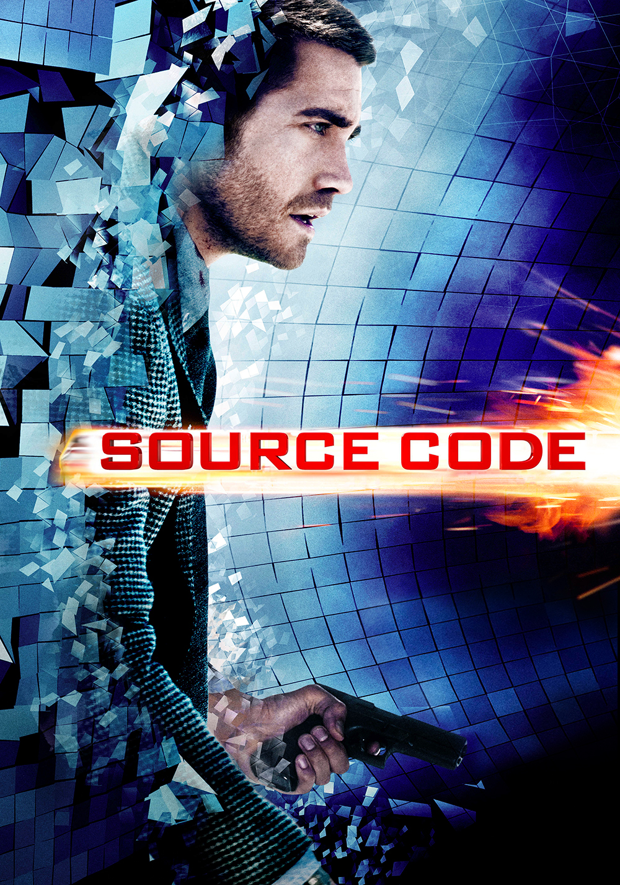

🍿 La cloroteca |
⤶ Volver al inicio |

Advertencia de spoilers
Source Code (o 8 minutos antes de morir) trata sobre un soldado que está en el limbo de la vida y la muerte para servir a un proyecto secreto del gobierno que permite modificar el futuro sin alterar el pasado. Nuestro protagonista tiene solo ocho minutos en la mente de otra persona para descubrir a un terrorista, y así atraparlo antes de que realize otro atentado.
La película es emocionante de principio a fin y simpatizas con el protagonista ya que sacrifica todo para hacer lo correcto a pesar de no tener nada de información. No hay muchas escenas de acción, pero no son necesarias, ya que la trama trata de descubirir quien es el terrorista, y a la vez que le ha pasado al protagonista. Además, el final es muy satisfactorio.
Un pequeño error sucede en su segundo viaje, cuando a pesar de que el tren explotó, se queda más tiempo del que deberia, aunque probablemente sea una pista del final. Tambien la justificación cientifica nunca es concreta, siempre ponen excusas de que es muy complicado para que lo entienda el protagonista, aunque al final dan una cierta explicación que no rellena los huecos.